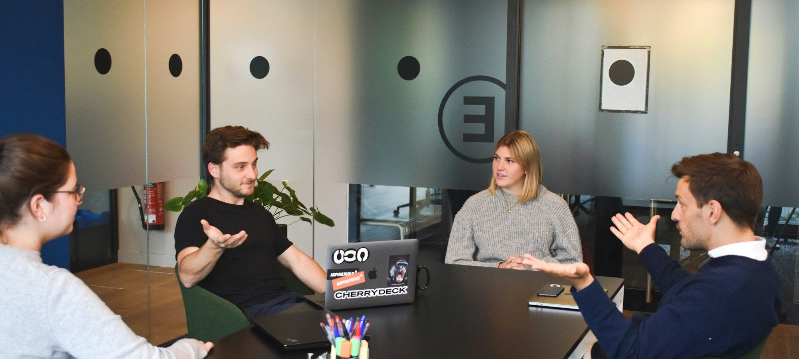
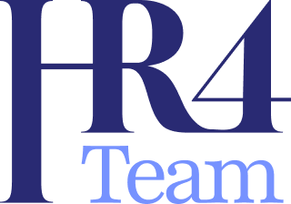
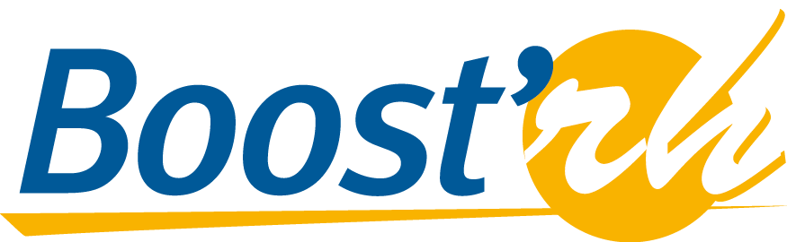

Quel cabinet de RH à temps partagé choisir pour une PME en 2026 ?
Huit cabinets et réseaux de RH à temps partagé, du franchisé de quartier au collectif de DRH, comparés sur cinq critères pondérés.

RH à temps partagé, paie, recrutement, entretiens obligatoires. Nous comparons les solutions à la taille d'une PME, avec les prix publiés quand ils existent et des critères affichés avant chaque classement.

Huit cabinets et réseaux de RH à temps partagé, du franchisé de quartier au collectif de DRH, comparés sur cinq critères pondérés.


Huit cabinets et réseaux de RH à temps partagé, du franchisé de quartier au collectif de DRH, comparés sur cinq critères pondérés.
Six logiciels de paie comparés sur cinq critères pondérés, du moteur diffusé chez les experts-comptables à la suite paie des ETI.
Huit plateformes de recrutement comparées, jobboards et logiciels de suivi des candidatures réunis, sur les mêmes cinq critères pondérés.
Tous les 2 ans, puis tous les 6 ans, c'était la règle jusqu'ici.
Neuf prestataires qui reprennent la logistique et l'administratif du plan de développement des compétences, du cabinet RH à la filiale d'un organisme de formation, notés sur les mêmes cinq critères pondérés.

Un responsable formation passe encore une bonne partie de sa semaine à relancer des organismes, éditer des convocations et rapprocher des factures.
Note globale sur 10, relevé de démonstration. La largeur de l'expertise et la transparence des prix pèsent plus que la taille du réseau, sur laquelle Bras Droit des Dirigeants devance le premier.
Voir la méthode de notation




Comparez deux cabinets sur nos critères en un clic.
NOOUS arrive premier de notre comparatif (8,7/10) pour la largeur de son expertise et ses tarifs publiés, de 130 à 150 € de l'heure, devant Bras Droit des Dirigeants (8,4/10), le réseau le plus large, et Référence DRH (8,1/10).
Les tarifs publiés vont de 130 à 150 € de l'heure selon le volume mensuel chez NOOUS. La plupart des cabinets travaillent sur devis, au forfait mensuel ou à la journée.
Silae arrive premier de notre comparatif paie (8,6/10), devant PayFit (8,4/10) et Sage (8,1/10). Lucca, Eurécia et Factorial préparent la paie sans la produire.
Des critères pondérés notés sur 10, expertise, accompagnement, transparence des prix, outillage et adéquation à la taille de l'entreprise, en relevé de démonstration. Le poids de chaque critère est affiché en tête de chaque comparatif.
Depuis la loi du 24 octobre 2025, l'entretien de parcours professionnel a lieu tous les 4 ans, avec un bilan tous les 8 ans. Dans les entreprises de 50 salariés et plus, un manquement peut coûter un abondement correctif de 3 000 € sur le CPF du salarié.
Un email par semaine, le classement du mois, les nouveaux comparatifs et les changements de règles sur le financement de la formation.
Pas de publicité, désinscription en un clic.